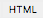
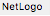
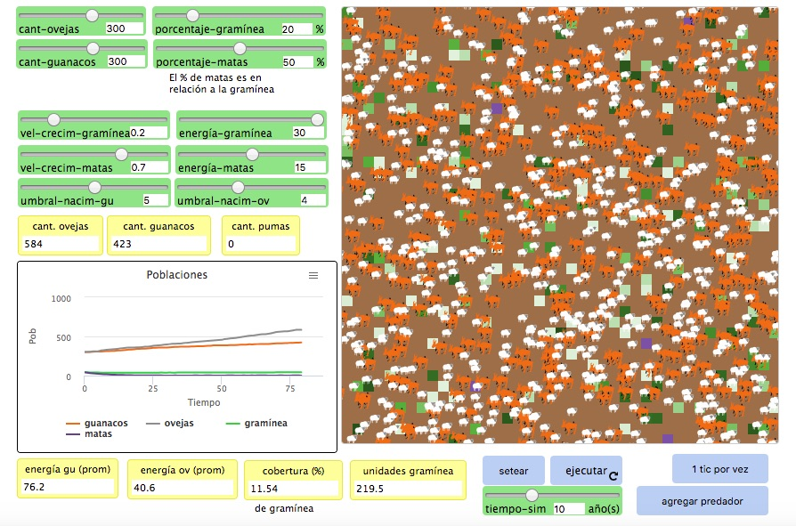

Enseñanza basada en simuladores
Simulador
Guanacos y Ovejas

Para acceder al simulador hay tres opciones posibles:
OPCIÓN 1
Ejecutarlo directamente desde la web dando clic en el botón de aquí abajo:
OPCIÓN 2
Bajar el archivo en formato HTML desde la web haciendo clic en el botón  ubicado al lado de la opción Exportar, en la parte superior derecha de la pantalla del simulador y, una vez bajado, ejecutarlo directamente desde la computadora (se abrirá una ventana en el navegador)
OPCIÓN 3
Bajar el archivo en formato NetLogo desde la web haciendo clic en el botón  al lado de la opción “Exportar”, ubicada arriba a la derecha de la pantalla del simulador. En el caso de elegir esta opción, se bajará un archivo con extensión .nlogo. Para poder abrir este archivo, será necesario instalar el entorno NetLogo (libre, gratuito y multiplataforma), bajándolo a través de este botón:
La opción 1 es la más recomendable en cuanto a comodidad ya que el enlace lleva directamente al simulador. La contra es que necesita Internet, y además, al correr desde la web, la ejecución puede ser lenta.
La opción 2 tiene la dificultad de ver dónde se bajó el archivo para poder ejecutarlo.
La opción 3 es la más recomendable si se cuenta con soporte técnico que instale el software y luego pueda abrir el archivo desde dentro del NetLogo ya que es la que permitrá ejecutar la simulación con mayor velocidad, además de poder ver los gráficos con mayor nivel de detalle.
Este modelo de simulación explora un ecosistema simple formado por guanacos, ovejas, gramínea (color verde) y matas o pastos más rústicos, duros y secos (color violeta):
Los guanacos y las ovejas deambulan de forma aleatoria, y la gramínea y las matas crecen al azar.
Cuando un guanaco o una oveja pasan por una parcela que contiene gramínea, comen una cierta cantidad de la gramínea que encuentran en la parcela (situación que sucede con una probabilidad del 80%) y así ganan energía.
Cuando un guanaco se encuentra con una parcela que contiene una mata, tiene una gran probabilidad (80%) de comerla y ganar energía. Cuando una oveja se encuentra con una parcela que tiene matas, no sucede nada porque las ovejas no se alimentan de matas.
Si la oveja o el guanaco gana suficiente energía, se reproduce. Si se queda sin energía, muere.
Para reproducirse se requiere energía que está determinada por el deslizador umbral-nacim-gu (para los guanacos) y umbral-nacim-ov (para las ovejas).
Se utilizan tiempos de gestación y número de crías reales para ambas especies.
La gramínea y las matas se pueden ajustar para que crezcan a diferentes ritmos y den diferente cantidad de energía a guanacos y ovejas. El modelo se puede utilizar para explorar las ventajas competitivas de estas variables.
Los guanacos se mueven más rápido que las ovejas y por lo tanto gastan más energía en moverse. Las ovejas se mueven más lentamente pero no gastan tanta energía en moverse. Un guanaco, además, come 1.5 veces más que una oveja.
En cada parcela de gramínea hay una cierta cantidad de unidades de gramínea. Estas unidades de gramínea van disminuyendo -obviamente- a medida que los guanacos o las ovejas pasan por la parcela y comen. La mata, en cambio, se come de una sola vez (solamente los guanacos comen matas).
El color de las parcelas con gramínea va cambiando de acuerdo con la cantidad de gramínea que contienen. Cuando más gramínea haya en la parcela, más oscuro será el tono de verde. Las matas son siempre violetas, de la misma tonalidad.
Cuando una parcela agota su cantidad de gramínea, se vuelve marrón indicando que allí no hay alimento, solo tierra.
En el modelo se pueden agregar pumas como predadores. El puma, en este modelo, se alimenta tanto de ovejas como de guanacos, pero tiene preferencia por los guanacos, ya que le brindan mayor cantidad de energía. Los pumas de esta simulación pierden energía mientras se desplazan, y ganan energía al comer pumas y ovejas, pero no se reproducen.
Es posible agregar pumas a la simulación. Los pumas no se reproducen pero sí pueden morir si se quedan sin energía. Para obtener energía, los pumas comen tanto ovejas como guanacos, pero no comen ni gramínea ni matas.
Los deslizadores cant-ovejas y cant-guanacos definen las cantidades iniciales de ovejas y guanacos que habrán en el campo respectivamente.
El deslizador porcentaje-gramínea establece qué porcentaje de las parcelas totales contendrá gramíneas. Luego, el deslizador porcentaje-matas determinará qué porcentaje de esas parcelas de gramínea son matas.
El deslizador vel-crecim-gramínea controla la velocidad a la que crecen las gramíneas.De igual manera el deslizador vel-crecim-mata lo hace controlando la velocidad a la que crecen los matas.
Los deslizadores energía-gramínea y energía-matas controlan la cantidad de energía que entrega cada unidad de gramínea y mata a un herbívoro, respectivamente.
Los deslizadores umbral-nacim-gu y umbral-nacim-ov controlan la cantidad de energía que necesita cada animal para reproducirse respectivamente. Cuando un guanaco o una oveja se reproducen, su energía se reduce a la mitad, y su cría nace también con la mitad de energía que tenía su progenitor/a.
Los monitores energía-gu-prom y energía-ov-prom muestran continuamente la energía, en promedio, de guanacos y ovejas respectivamente.
El monitor cobertura (%) muestra el porcentaje de gramíneas respecto del terreno total, expresado en porcentaje. La idea de este índice es poder medir la magnitud del agotamiento del terreno. Se complementa con el monitor que está a su lado, el cual expresa la cantidad de unidades de gramíneas disponibles en el terreno. La idea de este monitor es poder expresar la disponibilidad de alimento (gramínea) para ovejas (ya que es su única fuente de alimentos) y para guanacos (que también comen matas). Este monitor muestra el valor absoluto de unidades disponibles.
En la parte inferior derecha de la pantalla del simulador, están los botones de setear y ejecutar, pero también aparece un deslizador tiempo-sim que permite especificar la cantidad de años que queremos simular. Además, hay un botón llamado 1 tic a la vez que permite ejecutar la simulación avanzando el tiempo paso a paso.